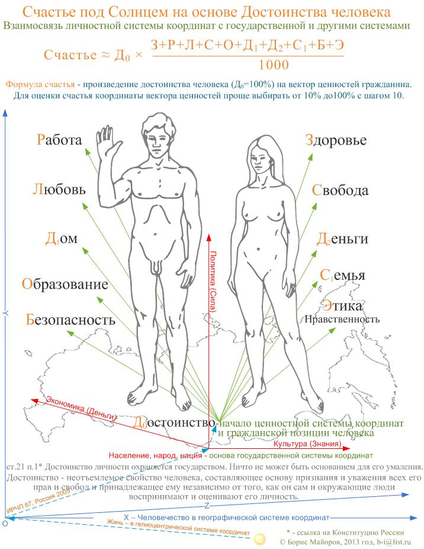
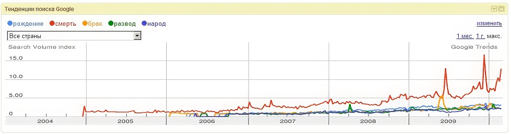
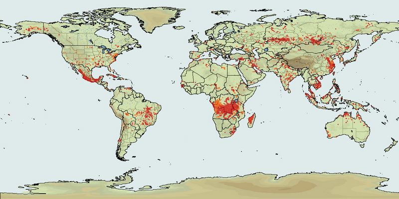

Б.Майоров
Качество человека, русского человека - сложное понятие и его осмысление, его становление, его оценка, оцифровка происходит в наше время, одновременно существенно уточняется история России, характер и её текущее состояние среди сообществ, цивилизаций Земли. Менталитет населения как понятие старше, но более расплывчатое и чаще используется в научном дискурсе.
Менталитет и качество человека, сообщества формируются веками. Большинство населения нашей планеты жило и продолжает жить примитивно, не смотря на цивилизационную "прописку" в том или ином регионе. В России процесс становления цивилизации обусловлен окружением ранее цивилизованных народов и нищими социальными и человеческими условиями общежития в богатой и безопасной природной среде, позволяющей выжить в жёстких социальных условиях и экспериментах последнего времени. В России от голода не умирали и это замедляло социальные процессы. Практически так же как и сегодняшняя нефть и газ замедляют рост качества, динамику цивилизационного изменения населения, рождение нашего общества и в идеале политической нации.
Правители Европы и Азии в многолетних междоусобных войнах не только сбрасывали лишнее население, но и формировали право. Огромные просторы России и холодный климат ослабляли кровопролитие, замедляли и становление правового поля, самоидентификацию личности. Возможно, эти условия и создали правовой нигилизм, а обоюдное недоверие властных сословий и народа способствовали усилению повсеместной коррупции бюрократии, воровства, пьянства и пассивности населения, других социальных язв. Впрочем, научные знания по истории России, её европейской и «холопской» традиции можно почерпнуть из трудов историка Александра Янова, в его недавно вышедшей трилогии «Россия и Европа. 1462 - 1921» и проходящих по этому поводу дискуссий
Весь ХХ век и сегодня бывшие холопы и наследники командно-административной системы, обучившись в ВУЗах различным специальностям и заняв места судей, офицеров Армии, ФСБ, милиции и других силовых структур, и даже места депутатов от народа, не смогли стать достаточно самостоятельными гражданами и часто принимают свои решения только по указанию вышестоящих начальников или за взятку, что почти одно и тоже.
Важное значение для консервации индивидуальных качеств гражданина имеет и Победа СССР в Отечественной войне 1941-1945 года. Население СССР воевало за Родину, за Отечество, за общее дело, когда практически игнорировались интересы отдельного человека; понятие личности, прав, свобод и законных интересов в повседневной жизни не существовало. Да и после войны несколько поколений самоотверженно работало на величие родины во всех областях. Однако подвиг населения некому было положить в базис для развития свободы каждого человека и демократических институтов в СССР, за которые воевали народы развитых стран. Правящий режим СССР по сути присвоил результаты Победы и вновь бросил все ресурсы на достижение мирового господства пролетариата и другие химеры, выдавая победителям крохи из закромов Отечества. Это способствовало сведению на нет активности каждого гражданина, которая сегодня могла бы стать основой нового качества гражданского общества в России, когда благосостояние Отечества складывается из активности и благосостояния каждого человека.
Я учился в Военной академии РВСН и против академии в 70-е годы на тепловой электостанции висел лозунг "Коммунизм - это советская власть плюс электрификация всей страны". Человек в этой формуле не просматривался. А после краха советской власти электричеством стали пользоваться дезориентированные люди. И если вдуматься какие рубильники стали доступны дезориентированным людям, то становится страшно.
Рост сложности и качества собственных или внедрение импортных технологий без иного качества населения ведёт только к крупным авариям, а опережающий рост ядерных технологий в промышленности или военном деле может спровоцировать глобальную катастрофу. Об этих тенденциях предупреждали как западные учёные, так и наши, например, Оппенгеймер и Сахаров. Однако неподготовленные люди с низкими цивилизационными качествами (серость) продолжают захватывать командные посты во всех отраслях. Для ракетно-ядерной России это может обернуться катастрофой. Мне немножко знакомы офицеры и генералы центральных органов. Эти способные мальчики из российских деревень, обучившиеся летать на самолётах и управлять ракетами в первом поколении могут принести много беды, так как нет адекватных политических деятелей, целых слоёв политической элиты, защищающих ядерную кнопку от волюнтаристских решений маршалов первых поколений. Причём весьма вероятно, что качество населения может меняться со временем. Не исключено, что опасные технологии могут достаться неадекватному потомству, которое затеет войну по неосторожности или хуже того по умыслу.
Крушение традиционных империй и сословий привели к жизни силовое лидерство на новом уровне, фашизм - болезнь освобождённых масс. Все страны прошли через освобождение народа от жёсткой иерархической зависимости, но Россия пошла дальше и совсем разрушила адекватную социальную иерархию согласно историческому времени сообщества. Да, в отечестве есть выдающиеся личности во многих областях, но социальное время развитых европейских стран указывает на необходимость наличия адекватных цивилизационных качеств у каждого гражданина демократической республики, которой общенародно провозглашена Россия. Кроме этого страховая стоимость жизни каждого не должна быть копеечной, а в некоторых регионах такая страховка должна быть особенно высокой. Планировать инновационное развитие без понимания и расчёта образа современной личности - утопия.
И несмотря на принятую Конституцию, народ заблудился. Силовое, финансовое и разумное лидерство не могут занять свои ниши. Демократизация России по Конституции 1993 года и начавшаяся в эти годы автоматизация общества дают пока эффект 3% - такой же эффект как и у паровоза от сжигания дров. И это в нашей ситуации считается нормой - граждане привыкли к неэффективной жизни столетиями. Советский период нашей истории, переложив собственность на государственный аппарат и введя товарищество во взаимоотношения советского человека, по существу вывел отдельного человека из правового поля, тем самым отказав ему в самостоятельности и самоорганизации.
У меня сложилось твёрдое мнение, что отставание гражданской дееспособности в России стало заметным в период Первой мировой войны, когда из-за неадекватных времени социальных отношений и отсутствия политической культуры народа основные страны участники войны: США, Германия, Франция, Англия … начали успешно разрушать Россию путём инициализации тлеющих революционных демократических дискуссий, заговоров, саботажа..., приведшего к несвоевременному отречению царя.
В ходе гражданской войны в России, последующих репрессий, Второй мировой войны и холодного противостояния двух социальных систем качество народа не росло, несмотря на всестороннюю критику царизма и энтузиазм народной интеллигенции, которую использовала руководящая партия для бездоговорных, безмолвных, бесплатных услуг в медицине, образовании, жилищном строительстве, а и зачастую для помощи народному сельскому хозяйству. Низкое качество услуг, отсутствие самодеятельных социальных связей и закрытость народа от широких социальных и рыночных связей, несмотря на некоторый рост материального уровня, усугубляли ситуацию и лишь оттягивали обвал неперспективной советской системы, который усугубил крушение Российской Империи. Теперь, после огромных мобилизационных усилий народа вместо его постепенного перехода на новые цивилизационные рельсы, только активность каждого определит успех или неудачу модернизационных начинаний элиты для российского общества. И это вроде бы всем ясно, но шагов в сторону активизации и роста качества каждого человека не делается.
Недавно смотрел фильмы об адмирале Колчаке и полковнике Буданове. Адмирала, который мог бы в 1917 году для России взять Константинополь и вывести Россию в мировые лидеры, представители народа без суда (по легенде следствия) расстреляли в феврале 1920 и бросили в прорубь сибирской реки, а полковника осудили за изнасилование и убийство девушки. В фильме про Колчака герой постоянно надеется и полагается на народ, а в фильме про Буданова герой сказал, что его качества, как человека, такие же как у остальных. И далее в подтексте интервью с ним можно понять, что эти остальные полковники от народа управляют не только танками, но и стратегическими ракетами с ядерными боеголовками, которые не смогут присоединить к России не только Константинополь, но и удержать теперь в составе Российской Федерации некоторые кишлаки. Говорю с сожалением о качествах военных, так как они лучшие из мужчин в России. Гражданские собратья на данный момент и того хуже.
Продолжение использования (эксплуатации) национальных природных богатств России, строительство только вертикали социальных отношений и недостойное отношение к интеллектуальному труду усилят только безответственность, некомпетентность и коррумпированность бюрократии находящейся вне народного контроля, что окончательно погубит Россию в XXI веке. Трудно представить, что модернизация Германии после падения Третьего рейха состоялась, если бы его перестраивали без денацификации сами члены нацистской партии, чины СС, СА и работники ведомства Геббельса. Наверно большинство из них вывозило бы капиталы из Германии в Южную Америку и иные лазурные берега. Мы попробовали измениться в духе братства и... за 20 лет не смогли освоить демократическое устройство страны с рыночными отношениями; не удаётся автоматизация основных отношений в экономике, образовании, науке, военном деле, в социальных отношениях и управлении государством. Народ потерял доверии к элите и отказался осваивать и демократию, и автоматизацию, и новые вагоны электричек. Наверно плохо, что не было сделано научно-политической оценки советского периода России. Пишу это с большим сожалением, имея опыт внедрения того, другого и опыт ежедневных поездок на электричках в лучшие годы своей жизни. Кроме нежелания и неготовности к переменам народ восстанавливает советскую грязь и неустроенность в своих новых подъездах новых или отремонтированных домов. Кругом много дерьма. Российские интеллектуальные демократы 90-х могли называться в народе только дерьмократами. Народ слабости не уважает. Переход к новому, возможно, надо было осуществлять через более жёсткую терапию и твёрдые оценки ситуаций или длительный период под руководством кормчего, возможно, лидера нации.
Такие же события проходят не только в России. Северная Корея, вероятно, живёт ещё хуже. Народ в тисках жёсткой диктатуры вертикали управления во главе с наследным лидером не приобретает ни социального, ни человеческого, ни природного капитала, а строит ракеты и готовит ядерные боеголовки из последних сил. Южные корейцы и жители развитых стран южной Азии в благоприятных условиях быстро приобрели необходимые качества для жизни в условиях демократии и автоматизации.
Кстати, необходимое качество современного человека приобрёл герой В.Войновича Иван Чонкин. Он волей судьбы был во время войны перемещён в США. Иван посетил Россию после долгого отсутствия и вставил фарфоровые зубы свое подруге юности Нюре, которая жила в той же деревне Красная..

Например, качество современного человека и мне не удаётся приобрести, не смотря на то, что я работаю всю жизнь в сфере высоких технологий и последние 15 лет в Мэрии Москвы. Фарфоровые зубы мне только сняться.И не только мне. Во всём нашем городке ракетчиков РВСН - Власихе периодически перегорают пробки и весь городок погружается во тьму, а вокруг и днём и ночью блещут огнями или озаряются салютами китайских фейерверков городки участников оптовых, розничных и других торгов. Особенно сияет и обращает на себя внимание район Барвихи, можно даже не зажигать свечи в тёмных комнатах ракетчиков, выходящих в сторону этого района - отсвет нашего будущего помогает ориентироваться в темноте.А если посмотреть в целом на Россию лета 2010 года, то окажется, что народ наш не готов не только к демократии, но и к упаковке от чёрного хлеба. Все тропинки и опушки леса завалены упаковками, банками, коробками, пачками, окурками... Молодёжь с 13 лет курит и бегает за Клинским, при этом двигательные реакции оттачиваются не в спортивных играх, а на эффективных бросках банки и окурка в сухую траву. Реклама телевидения загадила и сожгла леса России. Я бы сделал вывод, чтонынешнее телевидение губит наше население.
Для России вывод только один – на основе вертикали управления (раз уж декларировано её создание), на основе какого-либо иного управленческого потенциала незамедлительно приступить к формированию развитой правовой системы, независимой судебной и правоохранительной услуги государства и в этих рамках совокупности человеческих ценностей, методику ориентации в них и на этой основе всесторонне увеличивать, стимулировать горизонтальные социальные связи и человеческий капитал России, любую активность населения и каждого человека. Если мы хотим предотвратить силовой способ перехода человечества к глобализму, к инновационному устойчивому развитию надо потратить основные силы на появление правовой солидарности народа, возделыванию традиций и тенденций для закрепления их в менталитете народа, который даст его современное качество и постепенно уходить от всяких капитализмов-либерализмов-социализмов. Надо формализовать, оцифровать, знать и рассчитывать жизнь каждого региона, иначе, как во времена Гражданской войны 20-х годов, на каждом полустанке наших железных дорог будет устанавливаться своя система управления, трассы будут перекрывать, а поезда и фуры грабить или пускать под откос. Без автоматизированного учёта граждан, включения социальных полномочий и интеллекта каждого гражданина России в современный инновационный процесс эпохи устойчивого экономического развития нам не войти, а новые скачки энтузиазма, подобные пятилеткам интенсивного развития прошлого, невозможны. Призывы и мобилизационные лозунги "Вперёд" уже не работают. России надо реализовать внутренний потенциал и на этой основе войти в мир распределённого и динамичного лидерства в конкурентной среде.
Осмыслению новых понятий поможет книга Качество жизни. Краткий словарь. - М.: Смысл, 2009. - 168с.
ISBN 978-5-89357-260-.
КАЧЕСТВО ЖИЗНИ - совокупность свойств жизни человека, включающая его внутренние возможности осуществлять жизнедеятельность с той или иной интенсивностью и экстенсивностью (жизненный потенциал) и свойства, выражающие уровень соответствия параметров среды и характеристик жизненных процессов индивидуально и социально позитивным потребностям, интересам, ценностям и целям. ( Автор. Одно из определений, приведенных в этой книжке).
Добавлено: 13.03.10 - запросы народа отражают качество жизни. Как живут - о том и говорят, те слова и вставляют в запросы!.

К месту и мнение художника о состоянии качества жизни народа, сдвинутого со своих ориентиров ....
Жить бы мне
В такой стране,
Чтобы ей гордиться.
Только мне
В большом говне
Довелось родиться.
Не помог
России Бог,
Царь или республика,
Наш народ
Ворует, пьёт,
Гадит из-за рублика.
Обмануть,
Предать, надуть,
Обокрасть - как славно-то?
Страшен путь
Во мрак и жуть,
Родина державная.
Сколько лет
Всё нет и нет
Жизни человеческой.
Мчат года...
Всегда беда
Над тобой, Отечество.
Эльдар Рязанов, "Неподведенные итоги"
Итоги подводить ещё рано и всему человечеству. Оно не успевает за бытовым и техническим прогрессом по всей территории Земли.
Рисунок с пожарами об этом говорит "красноречиво".

У нас, кроме лесов, сгорает самое ценное, сгорает брошенная обессиленными, обнищавшими и демобилизованными со строек Коммунизма взрослыми молодёжь, которая своими силами с 12 лет пытаться ориентироваться в общечеловеческих ценностях семьи, любви, заработка, дома и других основах социума современного человека.
Например, в современных цивилизованных странах на законодательном уровне закреплена помощь как природе, так и детям до 21 года. Каждый человек, население любой территории должно собирает себя в сообщество, в народ, в нацию постоянно. Пассивность ведёт к падению человека, семьи, сообщества..., и как это уже было в истории человека, исчезновению племён, государств..., империй, цивилизаций.
"Ценности и принципы: от ресурсной морали к этике свобод.
Модернизация начинается с правильного настроения. Особое значение приобретает гуманитарная составляющая: ценности и принципы, мораль и мотивации, установки и системы запретов.
В начале нового века России предстоит разрешить фундаментальный ценностный конфликт. Ресурсный социум, базирующийся на сырьевой экономике, традицинно располагает к освящению власти и государства – верховного распределителя («дарителя») благ. Вырабатывается отношение к населению отчасти как к обузе, отчасти как к возобновляемому ресурсу (расходному материалу) исторических свершений, титанических производств и т.д., вплоть до понимания социальной массы как предмета политтехнологических манипуляций. Складывается целая цивилизация низких переделов, культура недоделанности; сама страна оказывается вечной заготовкой под будущее правильное существование.
Однако теперь и впредь попытки привычной для России модернизации ресурсно-мобилизационного типа не только бесперспективны, но и невозможны.
• идеологические ресурсы веры и энтузиазма исчерпаны на предыдущем этапе (социалистического строительства).
• процесс раскрепощения общества в исторической перспективе необратим, что исключает «построение» народа на решение современных задач политическим зажимом и дисциплинарными техниками.
• при ограниченных возможностях воодушевления и репрессий демобилизуется и сам «аппарат авторитарной модернизации»: политический и административный класс, настроенный на авторитарные действия, становится главным тормозом обновления.
И главное: в отличие от этапов индустриализации, урбанизации и т.п., полноценные реформы постиндустриальной эпохи в условиях несвободы в принципе не реализуются. В современном мире главным ресурсом развития становятся творческие способности человека, его энергия и инициатива.".Я верю в здравый смысл населения российских территорий,я надеюсь на реализацию постмодерна и этики всех ценностей, а не только свободы. Да здравствует каждый человек России, сообщество ценностно-ориентированных людей и обновляющийся в новой цивилизации современный русский народ в XXI веке и последующих устойчивых столетий цивилизованного развития..
Для России огромное значение имеет переход с принудительной системы на добровольную Армию с государственной гарантией защиты человеческого достоинства, которая сможет стать генератором свободных людей.
Надеюсь, что переход советского общества России на современные основания западной цивилизации после надлома народа на стройках Коммунизма вскоре начнётся и успешно завершится. Хотелось бы надеяться, что серия неудачных вызовов на засуху, обернувшиеся массовыми пожарами не является признаком распада нашего общества и правящее меньшинство откажется от узурпации государственного управления и в конкурентной среде станет творческой, созидательной силой общества, приобретя доверие большинства для обустройства новой цивилизации на исторических просторах России..
31.08.1.
Приложение:
КАК У НАС ПРОИСХОДИЛ "ИСКУССТВЕННЫЙ ОТБОР", ОТКУДА НА ЗЕМЛЕ РУССКОЙ ОБРАЗОВАЛОСЬ СТОЛЬКО МЕРЗАВЦЕВ И ИХ ПОТОМКО.
(Из книги Николая Никулина "Воспоминания о войне.
Если бы немцы заполнили наши штабы шпионами, а войска диверсантами, если бы было массовое предательство и враги разработали бы детальный план развала нашей армии, они не достигли бы того эффекта, который был результатом идиотизма, тупости, безответственности начальства и беспомощной покорности солдат. Я видел это в Погостье, а это, как оказалось, было везде.
На войне особенно отчётливо проявилась подлость большевистского строя. Как в мирное время проводились аресты и казни самых работящих, честных, интеллигентных, активных и разумных людей, так и на фронте происходило то же самое, но в ещё более открытой, омерзительной форме. Приведу пример. Из высших сфер поступает приказ: взять высоту. Полк штурмует её неделю за неделей, теряя множество людей в день. Пополнения идут беспрерывно, в людях дефицита нет. Но среди них опухшие дистрофики из Ленинграда, которым только что врачи приписали постельный режим и усиленное питание на три недели. Среди них младенцы 1926 года рождения, то есть четырнадцатилетние, не подлежащие призыву в армию... «Вперррёд!!!», и все. Наконец какой-то солдат или лейтенант, командир взвода, или капитан, командир роты (что реже), видя это вопиющее безобразие, восклицает: «Нельзя же гробить людей! Там же, на высоте, бетонный дот! А у нас лишь 76-миллиметровая пушчонка! Она его не пробьёт!»... Сразу же подключается политрук, СМЕРШ и трибунал. Один из стукачей, которых полно в каждом подразделении, свидетельствует: «Да, в присутствии солдат усомнился в нашей победе». Тотчас же заполняют уже готовый бланк, куда надо только вписать фамилию, и готово: «Расстрелять перед строем!» или «Отправить в штрафную роту!», что то же самое. Так гибли самые честные, чувствовавшие свою ответственность перед обществом, люди. А остальные — «Вперррёд, в атаку!» «Нет таких крепостей, которые не могли бы взять большевики!» А немцы врылись в землю, создав целый лабиринт траншей и укрытий. Поди их достань! Шло глупое, бессмысленное убийство наших солдат.
Надо думать, эта селекция русского народа — бомба замедленного действия: она взорвётся через несколько поколений, в XXI или XXII веке, когда отобранная и взлелеянная большевиками масса подонков породит новые поколения себе подобных.
(Так оно и произошло на самом деле. - О.М..
КТО И КАК СОЧИНЯЛ "ВОЕННЫЕ МЕМУАРЫ".
Какие мемуары могут быть у тех, кто воевал на самом деле? У лётчиков, танкистов и прежде всего у пехотинцев? Ранение — смерть, ранение — смерть, ранение — смерть и все! Иного не было. Мемуары пишут те, кто был около войны. Во втором эшелоне, в штабе. Либо продажные писаки, выражавшие официальную точку зрения, согласно которой мы бодро побеждали, а злые фашисты тысячами гибли...
Симонов, «честный писатель», что он видел? Его покатали на подводной лодке, разок он сходил в атаку с пехотой, разок — с разведчиками, поглядел на артподготовку — и вот уже он «все увидел» и «все испытал»! (Другие, правда, и этого не видели.) Писал с апломбом, и все это — прикрашенное вранье. А шолоховское «Они сражались за Родину» — просто агитка! О мелких шавках и говорить не приходится.
Но самую подлую роль сыграли газетчики. На войне они делали свой капитал на трупах, питались падалью. Сидели в тылу, ни за что не отвечали и писали свои статьи — лозунги с розовой водичкой. А после войны стали выпускать книги, в которых все передёргивали, все оправдывали, совершенно забыв подлость, мерзость и головотяпство, составлявшие основу фронтовой жизни. Вместо того, чтобы честно разобраться в причинах недостатков, чему-то научиться, чтобы не повторять случившегося впредь, — все замазали и залакировали. Уроки, данные войной, таким образом, прошли впустую. Начнись новая война, не пойдёт ли все по-старому? Развал, неразбериха, обычный русский бардак? И опять горы трупов.
КТО ВЫЖИВАЛ И СТАНОВИЛСЯ "ВЕТЕРАНОМ".
Поразительная разница существует между передовой, где льётся кровь, где страдание, где смерть, где не поднять головы под пулями и осколками, где голод и страх, непосильная работа, жара летом, мороз зимой, где и жить-то невозможно, — и тылами. Здесь, в тылу, другой мир. Здесь находится начальство, здесь штабы, стоят тяжёлые орудия, расположены склады, медсанбаты. Изредка сюда долетают снаряды или сбросит бомбу самолёт. Убитые и раненые тут редкость. Не война, а курорт.
Те, кто на передовой — не жильцы. Они обречены. Спасение им — лишь ранение. Те, кто в тылу, останутся живы, если их не переведут вперёд, когда иссякнут ряды наступающих. Они останутся живы, вернутся домой и со временем составят основу организаций ветеранов. Отрастят животы, обзаведутся лысинами, украсят грудь памятными медалями, орденами и будут рассказывать, как геройски они воевали, как разгромили Гитлера. И сами в это уверуют! Они-то и похоронят светлую память о тех, кто погиб и кто действительно воевал! Они представят войну, о которой сами мало что знают, в романтическом ореоле. Как все было хорошо, как прекрасно! Какие мы герои! И то, что война — ужас, смерть, голод, подлость, подлость и подлость, отойдёт на второй план. Настоящие же фронтовики, которых осталось полтора человека, да и те чокнутые, порченые, будут молчать в тряпочку.
Оказывается, рациональные немцы и тут все учли. Их ветераны чётко различаются по степени участия в боях. В документах значатся разные категории фронта: I — первая траншея и нейтральная полоса. Этих чтят (в войну был специальный знак за участие в атаках и рукопашных, за подбитые танки и т. д.). II — артпозиции, штабы рот и батальонов. III — прочие фронтовые тылы. На эту категорию смотрят свысока.
После войны добрая Родина-мать собрала своих сыновей — героев-инвалидов, отдавших своё здоровье во имя Победы и отправила их в резервации на дальние острова, чтобы не нарушали красоты столиц. Все они тихо умерли там.
А по сытому и злачному городу Мюнхену ходят толпы сытых довольных жителей, среди них — умытые, обихоженные и довольные инвалиды-немцы.
. https://www.e-reading.club/book.php?book=100856